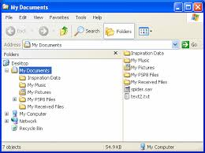

Now have a look at existing command line interface:

What really human see on the screen?
A specialist would say that from bottom (from input/cursor) to up the human sees a story of computer operations.
My correction would be that human sees a story of his mental activities shown on the screen. These activities are represented by result of computations, but main point is that what you see on the screen is a storyline of your mental actions :)
In this system user sees nouns (objects) and verbs (actions, commands).
There is interesting effect that computer shows “answers” which are “nouns” while user send “questions” which are close to “verbs”.
That is probably is answer why command line interfaces can be so powerful. A user sees a history of own actions and has to construct next questions to a computer with base of his previous results which he sees on the screen (plus can scroll). A user does not really know state of “reality” – to know the list of files in folder he has to ask a computer for “ls”, but when he gets it printed, it is already in past because time is passing…
But same time console allows to construct mental image of the past actions.
Another example:

Some “commander”.
That is very different concept. Now it is an user iterface that shows available objects of your system of symbolism :).
There is no “history” visible. There is no way to see or construct past states or no way to see actions or verbs.
Naked system of nouns without verbs.
But same time also powerful – user has small limited set of available “verbs”: “copy”, “move”, “delete”, …
User has to keep in his mental universe previous states and construct plan of his future states without a supporting matter.
Interesting that next coils of developing of these interfaces just use same idea.
Windows Explorer:

File Commander, Mac Finder, thousands of them…